イベントコマンド 【ピクチャ】
画像を読み込んで表示したり、文字列を画像として表示することができます。
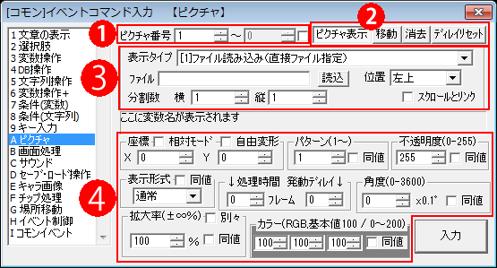
【基本的な説明】
・各数値欄には全て、通常の整数の他に変数（例：2000000＝通常変数0番）を代入することができます。
・「Save」フォルダ内のファイルを読み込みたい場合は「../Save/〜〜.png」と手動で「ファイル」欄に指定してください（「../」は1つ上のフォルダへ、という意味です）
・「お手軽ウィンドウ」では、「角度」は機能しません（常に0）。
・「同値」のチェックをオンにしていると、各々の値に「前回設定値の値」を自動で代入します。
・どのピクチャ番号にも表示されていない画像ファイルを新しく表示するときはHDDから読み込むため、そのフレームの処理速度が落ちます。頻繁に使うピクチャは、どこかのピクチャ番号に不透明度0で表示しっぱなしにしておくことで、他ピクチャ番号で同じ画像ファイルを表示したときに高速で表示することができます
※ただしゲームデータ作成時に「暗号化データ」にした場合は、128MB以内の.wolfファイルであれば起動時にまるごとメモリに読み込まれるため、この処理をする必要はほぼなくなっています。
【各部の説明】
１．ピクチャ番号
どの番号のピクチャに対して処理をするかを指定します。この欄には変数も指定可能です。1つのピクチャ番号には1つのピクチャのみ登録でき、すでに使用されているピクチャ番号で他の画像を表示すると、それまで表示されていたピクチャは自動的に消去されます。
番号指定箇所の横にあるチェックボックスをチェックすると、連続する複数のピクチャ番号のピクチャを同時に操作することができます。
ピクチャ番号は、値が大きいほど上に表示されます。
また、ピクチャ番号が【-10万】【0】【10万】のそれぞれの値を越えると、ゲーム内の一部の画像より上に表示されるようになります。ゲーム内の画像の層は以下のようになっています。
↑上層
【ピクチャ番号 10万以上 のピクチャ】
--- 文章や選択肢ウィンドウ ---
【ピクチャ番号 0〜99999 のピクチャ】 ※特に問題なければこの0〜99999の範囲を主に使うと良いでしょう。
--- イベント・フォグ・★属性のマップチップ ---
【ピクチャ番号 -1〜-99999 のピクチャ】
--- マップチップ ---
【ピクチャ番号 -10万以下 のピクチャ】
--- 遠景 ---
↓下層
※ピクチャ番号-1以下だと「エフェクト」の「マップ」の「色調変更」の影響を受けます(2017/2/27追記)
【昔の言い方】
・ピクチャ番号が0〜99999なら文章や選択肢の下に表示
・ピクチャ番号が100000(10万)以上なら文章や選択肢の上に表示
・ピクチャ番号が-1〜-99999なら、マップの上、かつ、イベントの下に表示（★属性などの一部チップはピクチャの上に表示されます）
・ピクチャ番号が-10万以下なら、マップの下、かつ、遠景の上に表示
２．「ピクチャ表示 / 移動 / 消去 / ディレイリセット」ボタン
ピクチャのどの操作を行うかを設定します。操作に応じて入力可能な箇所が変化します。
- 表示 … 新規にピクチャを表示します、すでに指定ピクチャが表示されていた場合は、ただの「移動」処理と同じ挙動をします。処理時間を1以上にすると透明状態から表示されます。
- 移動 … ピクチャを移動させます。ピクチャが表示されていない場合は何も処理されません。
- 消去 … ピクチャを消去し、画像をメモリから消去します。
- ディレイリセット … 「発動ディレイ」が指定されている未来の処理を全てリセットし、行わないようにします。
３．表示タイプの選択（「ピクチャ表示」時のみ）
表示タイプには4種類あり、それぞれ設定方法が異なります。
| [1]ファイル読み込み（直接ファイル指定） 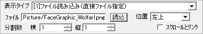 「読込」ボタンで表示させる画像ファイルを選択します。 \s[0]や\cself[5]などの代入型の特殊文字も使用可能です（Ver3.345以降）。 ※ただし「記述した通りのファイル名」があった場合は特殊文字は機能しません。たとえば「Picture\s[0].png」と指定して、s[0]というファイルが存在していた場合はそちらが優先して読み込まれてしまいます。 ・分割数 … 1枚の画像を分割して読み込む際に設定します。分割したそれぞれの画像は、パターン番号を指定して各々を読み込むことができます。たとえば、横4、縦2で分割したとき、下図のようなパターン番号で分割されます。
・位置 … 画像のどの位置を起点として表示させるのかを設定します。 「左上」「左下」「中心」「右上」「右下」の5種類が選択可能です。 ・スクロールとリンク … ここにチェックを入れて表示すると、ピクチャをマップ上に固定します。 ※「スクロールとリンク」の注意（2016/12/30追記） 「スクロールとリンク」させるとピクチャが拡大率100％時のマップのスクロール量に合わせて移動するため、【「エフェクト」でマップを拡大させている場合】は【ピクチャ位置にズレが発生】します。ピクチャ位置のスクロールリンクを拡大後のマップに合わせたい場合は、「エフェクト」でピクチャをマップと同じ設定分だけズームさせてください。 |
| [2]ファイル読み込み（文字列変数でファイル指定） 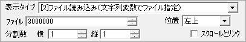 文字列変数でファイル名を指定します、「ファイル」欄にはファイル名が格納された文字列変数番号を入力してください。それ以外は[1]ファイル読み込みと同じです。 |
| [3]文字列をピクチャとして描画 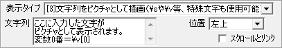 「文字列」の欄に表示したい文字を入力してください。この欄には\s[?]や\v[?]（?=数字）といった特殊文字も使用可能です。 表示例は以下の通りです。 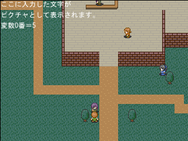 ※文字列ピクチャ使用時の注意点 「ゲーム基本設定」で設定した文章の「改行の間隔」は、「完全な空行(改行だけの行)には適用されない」ので注意して下さい。 完全に改行間隔を合わせたい場合は、その行に「特殊文字」や「半角スペース」だけでも入れることで、 「改行の間隔」が適用されます。 * 挙動として直感的ではないのですが、修正した場合の影響範囲があまりに大きすぎるので現状このままにしています。 |
| [4]お手軽ウィンドウ 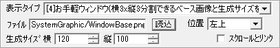 3x3分割できるベース画像を「ファイル」の欄に指定し、「生成サイズ」を設定すると、そのサイズのウィンドウ画像が自動で作成されます。 このとき、「ファイル」欄には\s[0]や\cself[5]などの代入型の特殊文字も使用可能です（Ver3.345以降）。 ※ただし「記述した通りのファイル名」があった場合は特殊文字は機能しません。たとえば「Picture\s[0].png」と指定して、s[0]というファイルが存在していた場合はそちらが優先して読み込まれてしまいます。 ベース画像の一例を以下に示します（赤線は説明のための分割線を表します）。 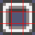 これ↑は12x12ピクセルのウィンドウベース画像を拡大したものです → ※ 原寸大！ このように、縦横3分割したときに、4方のカドとそれ以外の部分が 分離できる構造の画像なら、自然なウィンドウ表示を行うことができます。 これを実際に使用してお手軽ウィンドウを表示したときの例は以下のようになります。 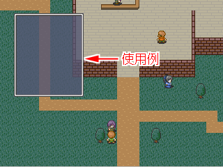 ※なお、ベース画像のサイズの2/3の大きさより小さいウィンドウを作ると、正常に表示されませんのでご了承下さい。 |
| [5]お手軽ウィンドウ（文字列変数でファイル指定） 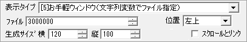 文字列変数でファイル名を指定します、「ファイル」欄にはファイル名が格納された文字列変数番号を入力してください。それ以外は[4]お手軽ウィンドウと同じです。 |
４．ピクチャの位置・表示設定
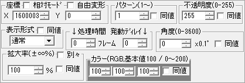
・座標
ピクチャを表示・移動させる座標をピクセル単位で指定します。
- 「相対モード」 … ここをチェックすると、現在表示されている座標を起点としてX、Yの分だけ移動します。
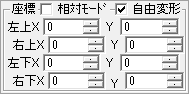
- 「自由変形」 … ここをチェックすると、左上・右上・左下・右下座標を指定して形状を自由に変形させることができます。うまく利用すれば、擬似的な3D描画を実現することもできます。
※ただし、自由変形したピクチャは一枚あたりの処理負荷が少し大きくなります。
※「拡大率」と「角度」は通常座標モードで指定した値がそのまま使用されます。
※なお、これで「表示/移動」したピクチャを、「自由変形」のチェックなしで「移動」させると、自動的に「中心」基点のピクチャとして扱われます。拡大率や角度も、中心基点に計算されます。
※普通の矩形（四角形）表示のピクチャだったものを、途中で自由ピクチャにすることも可能です。
※相対モードで4点の座標を設定すると、その値が「それぞれの点」の座標に加算されます。
・パターン
画像分割されている際、何番目の画像を表示するかを指定します。「[1]〜[2]ファイル読み込み」時にだけ有効な入力欄です、それ以外の場合は何を入力しても機能しません。
・不透明度
ピクチャの不透明度を指定します、255にすると画像がそのまま表示され、0にすると完全に透明になって何も見えません、128にすると半透明になります。
・表示形式
画像の表示形式を以下の4種類から選択することができます。
- 通常 … 画面上にそのまま描画します。
- 加算 … 画面上のRGB値を加算するような形で描画します。簡単に言うと、画像の明るさの分だけ表示部分が明るくなります。
- 減算 … 画面上のRGBを減算する形で描画します、簡単に言うと、画像の明るさの分だけ表示部分が暗くなります。
- 乗算 … 画面上のRGB値を今の画像と乗算して描画します。RGB255=1の値と考えて乗算するので、基本的にはピクチャの暗い部分ほど表示部分が暗くなり、白い部分(255,255,255)は影響を与えません。また、この形式の場合のみ、不透明度が無視されます（常に255）。
| 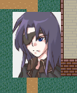 通常 |
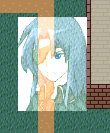 加算 |
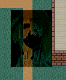 減算 |
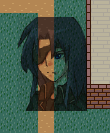 乗算 |
・処理時間 / 発動ディレイ
「処理時間」はどれだけ時間をかけて表示・移動・消去させるかの時間（フレーム数）を表します。この値を大きくすると、より時間をかけて移動します。
「発動ディレイ」は、表示・移動・消去を開始するまでの時間（フレーム数）です。この値を大きくすると、指定した処理が始まるタイミングがより遅れます。複数の操作を、発動ディレイをずらして同時に指定することも可能です。
・角度
画像の角度を0.1度単位で指定します（つまり3600で一周）。なお角度が0以外の場合、後述する「拡大率」の「別々」のチェックは機能しなくなりますのでご注意下さい。また、3600より大きい値を入れてもちゃんと回転します。
・拡大率
ピクチャの拡大率を指定します。
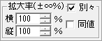
- 「別々」 … ここをチェックすると、横・縦で別々の拡大率を指定できます。
-- 「横」 … 画像を横方向に拡大します。-100％を指定すると左右反転できます。
-- 「縦」 … 画像を縦方向に拡大します。-100％を指定すると上下反転できます。
・カラー
ピクチャの色の補正をRGB（赤・緑・青）値で指定します。100が通常で、指定した値の分だけ各々の色の強さが変わります、200でより強調、0でその色の強さを無くします。
この値はRGBの光の強さの倍率を表しているので、例えば真っ黒な画像（RGB=0,0,0）に対して200,200,200と設定しても色は変わりません。
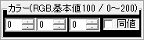 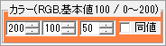
入力エリアの背景部分は指定した色に変化します。
【隠し機能 現在の画面をピクチャとして取得する <SCREENSHOT>】
「ファイル読込」で、「ファイル」に「<SCREENSHOT>」と入力して「表示」すると、「表示」したフレーム時点で画面に映っている内容をそのままピクチャとして取り込みます。
このピクチャはそのまま通常のピクチャとして使用できます。
ただし取り込み時の画面サイズを純粋にそのまま取得してしまうため、「320×240画面サイズ時」のように「基本画面倍率が2倍」だと、拡大率を50％にして表示しないと画面ちょうどになりませんのでご注意ください。
※この<SCREENSHOT>ピクチャはセーブされず、ロードしたときに消滅します。
【隠し機能 画像の一部を切り出して表示する <CUT/〜>】
「ファイル読込」で、「ファイル」に「<CUT/X10-150/Y40-300>Picture/AAA.jpg」などと入力して「表示」すると、画像「Picture/AAA.jpg」から、X座標10〜150ピクセル、Y座標40〜300ピクセルの範囲だけ切り出して表示することができます。
このコマンドだけで顔グラフィックなどを一部だけ切り出して使用できるため、切り出し画像を作成するコストを省くことができます。
【隠し機能 図形表示】
「お手軽ウィンドウ」で、「ファイル」に特殊な文字列を指定すると、図形を表示することができます。
ただし、これらの図形表示を使うと「角度」の値は無効になります（常に0）。
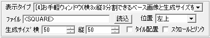
・ <LINE> ： 「座標」から「座標＋生成サイズ」の位置に白い直線を引きます。この場合は、「生成サイズ」にマイナスの値を入れても機能します。なおスピンボタンや上下キーではサイズを0以下にできないので、0以下の値は直接入れてください。
・ <LINE-11> ：太い線を描くことができます。11の部分には「太さ」として指定したい数字を入れてください。
・ <SQUARE> ： 「生成サイズ」の白い四角形を表示します。「FRAME」を付けると、外枠だけになります（例：<SQUARE>FRAME）。
・ <CIRCLE> ：「生成サイズ」におさまる白い楕円を表示します。「FRAME」を付けると、外枠だけになります（例：<CIRCLE>FRAME）。
・ <TRI-XXXX> ： 「生成サイズ」におさまる白い三角形を表示します。XXXXの部分には「UP」、「DOWN」、「LEFT」、「RIGHT」のいずれかを入力してください。三角形の向きを指定します。「FRAME」を付けると、外枠だけになります（例：<TRI-LEFT>FRAME）。
・ <GRADX-111-999> ： 「生成サイズ」の、横グラデーションの四角形を表示します。111の部分には左側の色を、999の部分には右側の色を、ＲＧＢ（赤・緑・青）の度合いで指定してください（例：000なら黒、999は真っ白、090は緑）。
・ <GRADY-111-999> ：「生成サイズ」の縦グラデーションの四角形を表示します。111の部分には上側の色を、999の部分には下側の色をＲＧＢの度合いで指定してください。
| 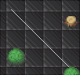 <LINE> |
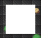 <SQUARE> |
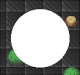 <CIRCLE> |
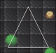 <TRI-UP>FRAME |
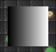 <GRADX-000-999> |
※一部の環境（グラフィックボードの差？）で、図形を半透明にしたとき一部が重なって見えるなど正常に表示されないケースが報告されています。気になる場合は同等の画像ファイルを作って差し替えることもご検討ください。(2023/03/17追記)
【動画読み込み機能】
このピクチャ処理では、画像ファイルの代わりに動画ファイルを読み込み、再生することが可能です。
再生可能な動画はmpg、avi、ogv、mp4形式です。
- 読み込める動画は「avi、mpg、ogv、mp4(H.264)」の4つです。
マニアックなフォーマットですが、圧縮率との兼ね合いで「ogv」形式が将来的にも安定して使えそうです。
（mp4はこの中で最も圧縮効率に優れているようですが、Windows機能で表示しているのでアップデートで出なくなる可能性があるとか）
- 動画の音声は、効果音のように再生されます。BGM音量補正の影響を受けます。
- 動画ファイル名に「_loop.」か「_LOOP.」が含まれていればその動画は自動ループします。
- 再生開始時やシーク時にどうしても20〜25ミリ秒程度止まってしまうようなので、頻繁に表示したり短時間ループするエフェクトとして自然に使用するのは難しいかもしれません。
【暗黙の仕様 ピクチャは小数点以下の座標計算には対応していません】
ピクチャは小数点の座標計算に対応していないため、1フレームの移動が1ピクセル未満になる処理を「毎フレーム」上書きで実行し続けた場合はピクチャが動かない場合があります。
たとえば、以下のように「8フレームかけてX座標を3ピクセル移動させる」コマンドを「毎フレーム」上書き実行し続けると、永久に右に行きません。
|■ループ開始
| |■ﾋﾟｸﾁｬ移動：1 相対X:3 Y:0 / 8(0)ﾌﾚｰﾑ / ﾊﾟﾀｰﾝ 同値 / 透 同値 / 表示形式:同値 / 角 同値 / 拡 同値 / ｶﾗｰ 同値
| |■ウェイト：1 フレーム
| |■
|◇ループここまで◇◇
ただし、マイナス値の移動に関しては0.01ピクセルの移動でも「整数の桁が変わって1ピクセル分動く」ため、「8フレームかけてX座標を-3ピクセル移動させる」を実行すると、実行した瞬間に1フレーム動きます。
こういった仕様のため、安定して非常にゆっくりと移動させたい場合は
1. 内部的に「10倍の座標値」を変数として持っておく（たとえばX軸20ピクセルの座標なら200）
2. それに足したり引いたりしてピクチャの座標として使うときだけ10で割る（上の200から毎フレーム6ずつ引いて、ピクチャに渡すときはその値を÷10した値を使う）
といった処理をすることが求められます。